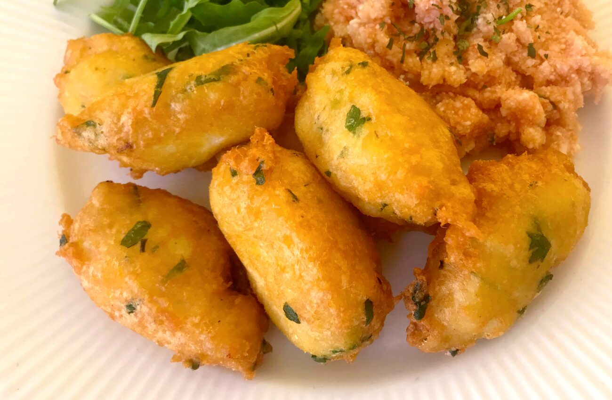

Francesinha é uma sanduíche originária da cidade do Porto, em Portugal. A francesinha na sua variação sanduíche francesinha especial é constituída mais habitualmente por linguiça, salsicha fresca, fiambre, carnes frias e bife de carne de vaca, coberta com queijo posteriormente derretido. É guarnecida com um molho à base de tomate, cerveja e piri-piri e pode ser servida com batata frita como acompanhamento.
A adição de um ovo estrelado no topo da sanduíche é um facto cada vez mais recorrente, sendo que esta prática constitui uma alteração à receita original
O pastel de bacalhau é uma das comidas portuguesas mais tradicionais – no Brasil é conhecido como bolinho de bacalhau.O bacalhau pode ser considerado um dos símbolos de Portugal. Barato e saudável, é o peixe mais consumido no país e está presente em inúmeras receitas.